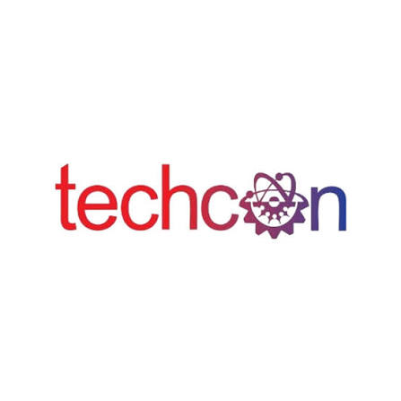
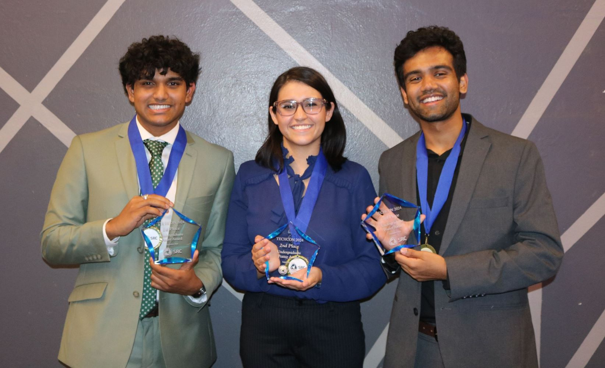
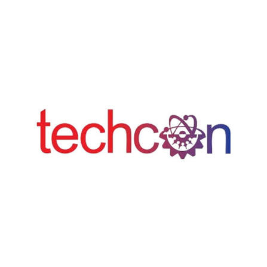
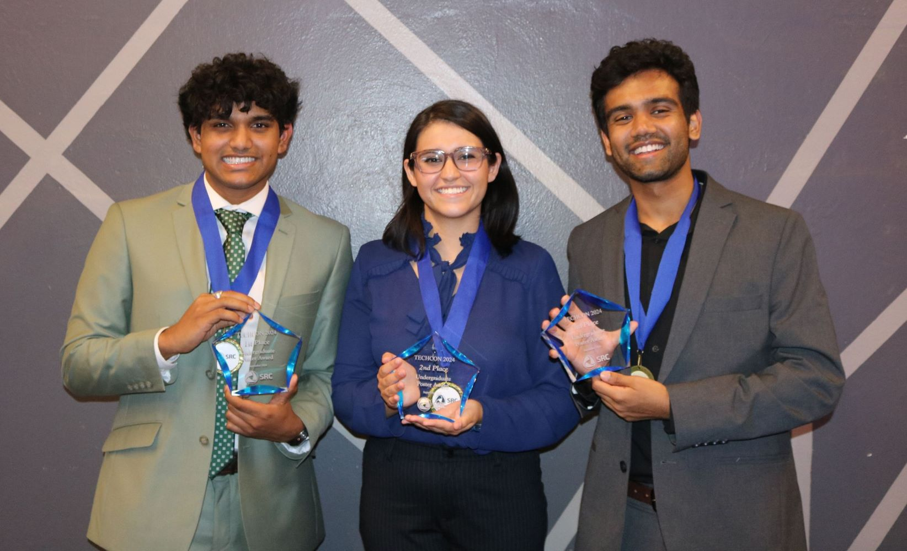
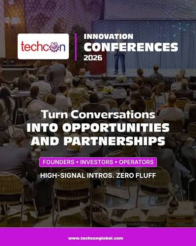
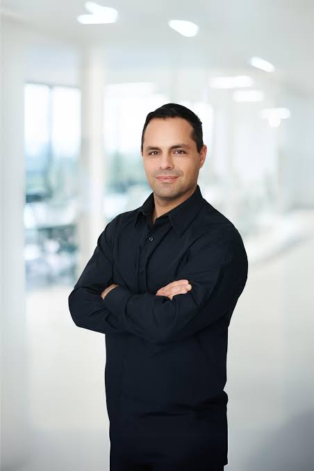

Our History
TechCon began in 2010 as a grassroots gathering of developers and innovators. Over the years, it has grown into a global platform for showcasing emerging technologies and fostering collaboration across industries.
 TechCon began in 2010 as a grassroots gathering of developers and innovators. Over the years, it has grown into a global platform for showcasing emerging technologies and fostering collaboration across industries.
 TechCon exists to empower creators, thinkers, and builders in the tech space. We believe in open knowledge, inclusive innovation, and the power of community to drive meaningful change.
At TechCon 2024, she is Founder and General Partner of Black Opal Ventures .She serve as a panelist, sharing insights on venture capital, diversity in tech, and strategies for empowering innovators. Her role is to guide discussions on investment trends and inspire attendees with real-world experience in funding breakthrough technologies. .
At TechCon 2024, the President of NuFunds play the role of a keynote contributor and panelist, focusing on the intersection of finance and technology.
At TechCon 2024, a Managing Director from Forcepoint Capital contributes as a speaker and panelist, focusing on cybersecurity investment strategies and the evolving risks in data security.
